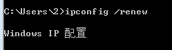
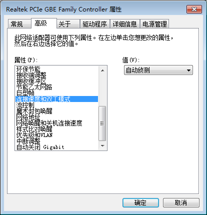

解决Windows7/10系统连接网线后显示“未识别的网络”的问题
问题描述
本科期间使用的是南京航空航天大学的校园网，宿舍里每个人桌子上都有一个网线接口，用网线连接接口和电脑的网线插孔，然后使用校园网账号进行拨号上网。一般情况下这样操作即可以连上互联网，但也有偶然情况：插上网线后，电脑屏幕右下角的网络连接图标一直在那转圈，一直显示“正在识别网络”，当然，最后是识别不出来的，点击右下角的网络图标后发现本地连接是未识别的网络。
这种状态下是无法拨号上网的，拨号上网会显示错误653，当时只是认为这是校园网抽风，一般等一晚上后重新插网线问题就不会再出现，所以并没有特别关注和研究这个问题。但是昨天这个问题又出现在了我的研究生工作电脑上，工作电脑也是使用的校园网，但是这次运气不那么好，昨天弄了一下午也没弄好，不知道问题在哪，网上的方法也都试了一遍，但都没任何作用。本以为等一晚上，网络就会自动好了，但今天早上打开电脑插上网线发现问题依旧，心情顿时落入谷底……
尝试解决
首先使用windows系统自带的网络问题诊断，经过一番诊断，windows报告说问题原因是无法获取有效的ip地址，于是我进入：控制面板\网络和 Internet\网络连接 中查看本地连接的状态，发现ip地址和MAC地址都是有的，但是却没有子网掩码、默认网关和DHCP服务器，后来在网上搜到解答说当电脑获取不到DHCP服务器自动分配的ip地址时便会在0-255之间随机选一个数字作为ip地址，也就是说虽然电脑上显示有ip地址，但是事实上这个ip地址是无效的！
那是不是网线或者电脑网卡出现了问题呢？我的电脑是windows+linux双系统，重启电脑进入linux系统，插上网线拨号上网，网络连接成功，打开浏览器随便浏览几个网页发现网络正常。同样的电脑同样的网线，既然linux系统可以上网，那就说明网线没问题，是可以成功传递数据的，电脑网卡也没问题。
硬件故障排除，那么故障就一定是出现在windows操作系统的软件层面上，那么“第一嫌疑人”就是windows系统的网卡的驱动！借同学的电脑下载了一个驱动精灵万能网卡版，然后卸载自己电脑原先的网卡驱动，然后用驱动精灵重新装网卡驱动，装完重启，问题依旧，网卡驱动的原因也排除了。
既然不能自动获取到ip地址，那我们不使用DHCP分配的动态地址而使用静态地址呢？先切换到linux系统，连接上网络，进入网络连接的属性界面，记录下网络连接的ip地址、子网掩码、默认网关、DNS服务器等参数，然后断开连接，切换到windows系统，打开控制面板依次进入网络和共享中心，更改适配器设置，右击本地连接，属性，Tcp/ipv4，属性，然后把“自动获取ip地址”更改为“使用下面的ip地址”，然后把在linux系统上记录下来的ip地址参数填到对应的参数栏里，同样把“自动获取DNS服务器地址”改为“使用下面的DNS服务器地址”，把主要DNS服务器地址和备用服务器地址填入对应参数栏，修改完后点击确定。更改完成后依然是“未识别的网络”，静态地址方法尝试失败。
既然获取不到ip地址，那我们就释放掉这个ip地址然后再重新获取新的ip地址也许可以解决。首先把上一步更改的ipv4参数改回来，然后进入windows命令行模式，输入命令：
ipconfig /release #释放ip地址
ipconfig /renew #获取新ip地址
然后电脑界面就停留在这个界面：

等待几分钟后,我们看到电脑上显示：无法连接DHCP服务器
这说明什么？说明我们的电脑和学校路由器（或交换机）之间的线路是不通的。这种“不通”并不是说物理上的线路坏了，而是在客户端与服务器端通信协议的不一致。
解决办法
我们根据上面第五个方法初步判断是通信协议出了问题。PS.没想到兜来兜去，最后却回到了我自己的本科和研究生专业通信工程上面来了，真是让人哭笑不得。
那就复习一下专业知识吧：在通信系统中，OSI(Open System Interconnection)模型将网络划分为七层：
- 物理层(Physical layer)是参考模型的最低层。由连接不同结点的电缆与设备共同构成。主要功能是：利用传输介质为数据链路层提供物理连接，负责处理数据传输并监控数据出错率，以便数据流的透明传输。
- 数据链路层(Data link layer)是参考模型的第2层。 主要功能是：在物理层提供的服务基础上，在通信的实体间建立数据链路连接，传输以“帧”为单位的数据包，并采用差错控制与流量控制方法，使有差错的物理线路变成无差错的数据链路。
- 网络层(Network layer)是参考模型的第3层。主要功能是：为数据在结点之间传输创建逻辑链路，通过路由选择算法为分组通过通信子网选择最适当的路径，以及实现拥塞控制、网络互联等功能。
- 传输层(Transport layer)是参考模型的第4层。主要功能是向用户提供可靠的端到端(End-to-End)服务，处理数据包错误、数据包次序，以及其他一些关键传输问题。传输层向高层屏蔽了下层数据通信的细节，因此，它是计算机通信体系结构中关键的一层。
- 会话层(Session layer)是参考模型的第5层。主要功能是：负责维扩两个结点之间的传输链接，以便确保点到点传输不中断，以及管理数据交换等功能。
- 表示层(Presentation layer)是参考模型的第6层。主要功能是：用于处理在两个通信系统中交换信息的表示方式，主要包括数据格式变换、数据加密与解密、数据压缩与恢复等功能。
- 应用层(Application layer)是参考模型的最高层。主要功能是：为应用软件提供了很多服务，例如文件服务器、数据库服务、电子邮件与其他网络软件服务。
高层协议主要由各个应用程序负责，如果高层协议出现问题那么只会影响特定的应用程序，而不会像我们遇到的问题一样所有的程序都连不上网络，所以问题应该出现在底层协议上面。
物理层就是网线，我们已经排除了，那就再看数据链路层，数据传输有单工、半双工、全双工之分，代表不同的数据传输方法，还有传输速率，客户端和服务器端要保持相同的工作模式，但我们不知道服务器端的工作模式，只能改变自己电脑的工作模式，我们电脑的工作模式一般默认是自动协商，就是不论服务器端的工作模式是什么，我们都可以自动改变自己的工作模式去匹配服务器端的工作模式。但是并不是总是能正确匹配的，如果双方的工作模式不匹配，那么这时因模式不匹配而导致客户端与服务器端之间不能形成有效链路，即虽然网线连接上了，但是无法正常通信，电脑也就没法从服务器获取正确的ip了。
知道了问题原因，我们把自动协商改成自己设置工作模式。打开“网络和共享中心”，“点击更改适配器设置”，右击“本地连接”，选择“属性”，在属性栏里点击“配置”，然后点击“高级”，找到“连接速度和双工模式”选项：

一共有六种工作模式：
- 1.0Gbps 全双工
- 10Mbps 半双工
- 10Mbps 全双工
- 100Mbps 半双工
- 100Mbps 全双工
- 自动侦测
PS:其中bps代表bits per second，一般指传输速度，这里的1G、10M、和100M并不是我们平常说的“网速”，但它跟网速有关，这里的单位是比特（bit），而我们平常说的网速是以字节（byte）为单位的，一字节等于八bit，也就是说如果传输速率是10Mbps，那么你的网速最高就是1.25M/s。
我试了100Mbps全双工和半双工都不起作用，当我切换成10Mbps后，网络图标里的“未识别网络”消失了，变成了“网络”，尝试拨号上网，连接成功！
感想
至此，历尽艰辛，花费了昨天一下午和今天大半早上终于解决了这个困扰我很久的问题，期间无数次想放弃弄这些去直接重装系统，但最终还是坚持下来了，得到了不少收获，至少修电脑水平又提高了一毫米。（虽然并没有妹子找我修电脑，呵呵）
但自己修自己的电脑何尝不是一种乐趣？（强行安慰自己）